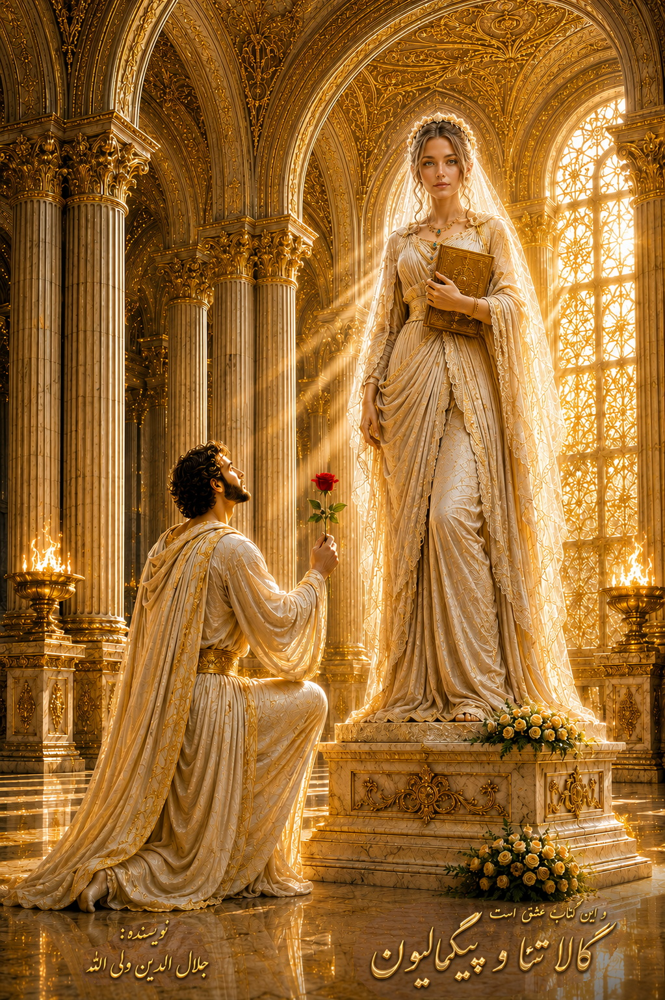

And This Is the Book of Love: Galatea and Pygmalion
Author: Jalaleddin Valiallah
Publisher: Salihin Publications
This page presents the introduction to Part One and selected passages from the story. The complete text of this part is not published on the website. The PDF edition is available upon request and purchase.
Introduction to Part One
An Analysis of the Novel Galatea and Pygmalion by the Author, Dr. Jalaleddin Valiallah
In this work, the author has transformed the brief and concise myth narrated by the Greek poet Ovid into a long novel, or a dramatic work in seven acts.
The author argues that a lasting romantic bond between two partners depends on numerous internal and external factors. Internal factors include the development and refinement of feelings and emotions, the temperaments, ethics, and characters of both partners, and their intellectual and social maturity. External factors, meanwhile, arise from social conditions, customs, traditions, and social constraints. However hard the partners may try to overcome these obstacles through passion, love, and emotion, the realities of cultural and ethnic differences, historical and social customs, and professional restrictions eventually emerge. At certain stages, they may become serious obstacles or even impassable barriers.
What are these processes of inner and emotional development, driven by the often-hidden force of individual and social maturity? And what are the ethnic and cultural barriers and limitations that stand in the way?
Pygmalion is a passionate young sculptor who comes from an artistic family. Through their exceptional artistic work, members of his family enjoy respect and a distinguished position among prominent and influential families in their society. Throughout his upbringing and life, he works with stone and slabs of marble, carving them into delicate and beautiful works of art. His craft depends on strenuous effort, artistic imagination, creativity, and the skill of strong hands guided by a sensitive, analytical, and meticulous mind.
At the same time, he lives in a society made up of hardworking people from its streets, markets, and neighbourhoods. Despite the many difficulties and exhausting obstacles they face in earning their daily livelihood, they depend on their own labour and perseverance.
Pygmalion therefore grows up not only in a balanced family that values reflection and artistic exploration, but also in an environment that nurtures social manners and intellectual curiosity. Stories, wise advice, and thoughtful moral teachings enrich his imagination and refine his aesthetic sensibility. Yet he also grows up in a society full of contradictions and cultural and ethnic diversity. Roman, Greek, Persian, Turkish, and other peoples and cultures intersect in the world in which he lives—a feature of the societies of Greece and Rome during that era.
In Greece, on the island of Crete, and in the city of Paphos, different cultures, peoples, and social customs meet and interact. The craft of sculpting stone teaches Pygmalion patience, composure, and endurance. His family and social upbringing shape him into a balanced, courteous, thoughtful, and dignified young man. He sets out into the old marketplace of life in search of his beloved, hoping to shape a future filled with love, devotion, and fidelity.
Like the hero of Nezami Ganjavi's Haft Peykar, Pygmalion is about to pass through stages of intellectual and emotional development as he encounters women and beautiful young women. In the author's vision, women in this diverse and pluralistic society are not helpless or powerless beings who simply obey any man. They possess their own capacity for thought and conscious choice. They participate actively alongside men in social and intellectual life and in the affairs of society.
The author is not a feminist and considers this ideology, approach, or way of thinking to be mistaken. He portrays woman as a counterpart and reflection of man: a man without a woman and a woman without a man are, in his view, two incomplete beings, each only half-finished without the other.
In addition to praising the beauty and virtues of the women and young women Pygmalion encounters, the author maintains that these women are consistently one step ahead of Pygmalion in understanding the complexities of social life at each stage of his development. They become teachers and guides who help him through various stages of his life and intellectual growth.
Gradually, as he passes through these difficult contests and turning points, Pygmalion places his own character before their judgment. Will they reject him, or will they accept him? In the author's view, women play an irreplaceable role in shaping and smoothing the course of life, both in the present and in the future.
But how do these stages of intellectual, emotional, and social development unfold?
Part One: The Love Story of Morvarid
The First Act: The Love Story of Morvarid
This part introduces the beginning of Pygmalion's story, the meaning of love, and the formation of his character. It familiarises the reader with the atmosphere of the narrative, Pygmalion's childhood, his family, the first stories he hears, and the characters' perspectives on love and life.
The love story of Morvarid represents the first step in Pygmalion's gradual understanding and discovery of the meaning of love. Morvarid is Pygmalion's maternal cousin and, together with his younger sister, his childhood playmate. The three grow up together and eventually reach maturity and adulthood.
During childhood, they spend much of their time together. They sleep beside Morvarid's doll, and each of them tells little stories to help the doll fall asleep. They are happy and carefree in one another's company.
Then puberty arrives, and the freedom of their companionship becomes restricted by the growing demands of modesty and social convention. Eventually, the time comes for Morvarid to leave when her family moves to another city.
Because she is a girl, Morvarid is ahead of Pygmalion in maturity and in understanding the complicated yet, in some ways, simple relationships of life. How does she use her behaviour and glances to attract Pygmalion's love?
Pygmalion, however, is still living in the world of childhood. He is not yet familiar with the feeling or understanding of this powerful and passionate love. These are meaningful and delightful events whose details can be discovered by reading the novel itself.
The passage out of childhood, the overcoming of imaginary fears, and the cultivation of a child's imagination acquire depth and significance through childhood adventures and stories of fairies, spirits, love, courtship, and the enchanting beauty of the heroines in Grandmother's tales. How does the hero of one of Grandmother's stories finally reach his beautiful and worthy beloved? What obstacles and dangers must he overcome? What actions must he avoid? How should he behave, and what manners should he observe when facing the beautiful woman he loves?
What is the meaning of life? How do love, devotion, and the journey towards finding one's beloved give a hero's life purpose and meaning? And what is the ultimate outcome of such heroic efforts? The following are selected passages from this part of the novel.
Grandmother's Advice on the Way of Love
The old woman said:
"There are rules to following the path of love. First, you must learn them. Second, you must observe them. Third, when you reach your beloved, there will be other rules, which you will learn at that time. It is possible that your beloved herself will then become your teacher—not only through her sweet words, but also through the arch of her eyebrows, the tresses of her hair, and her graceful coquetry..."
Every movement of the beautiful woman now revealed another aspect of beauty. Her laughter created delicate creases on her joyful face, a sight unlike anything he had ever seen. Every movement was captivating. She was not merely a motionless statue. Like the waves of the sea, she was alive and moving: a whole world of beauty, a wave of delicacy and gentleness, accompanied by tenderness and kindness.
This was one part of Grandmother's story. That was how Grandmother was—and this was only one of her hundreds of stories. She carried the children with her into a world of tales and legends, an ethereal and imaginary world full of hope, dreams, beauty, and love.
It was a world in which the dead came back to life and demons and monsters were subdued. In that otherworldly realm, the children floated through an ocean of imagination, in another world known as the unseen realm—a world in which anything was possible. Whatever could not happen in the visible world could come to pass there.
It was a land of wonders: many-headed serpents, dragons breathing fire, the world of the Simurgh, flying carpets, love and hope, and beautiful women. Then Grandmother would bring the children back to reality. By then, however, they had reached the fulfilment of their imaginative journey and had to return to life on this earthly ground.
What a remarkable world childhood is! Such was Grandmother.
Mother's Words
Mother said:
"Art is the quality a woman needs: the art of loving and being loved, the art of being praised and adored. It is as though the goddess of the heavens had placed part of herself within a being called woman—the joy of being praised and worshipped—and placed another part within man: the art of worshipping and praising woman, and captivating her through the world of art and ability."
Art is a realm in which the spirit rises, with springs that can quench humanity's thirst to understand and experience beauty and wonder.
This alone was enough to bring order to Pygmalion's being. His thoughts had become more settled, and willpower had become a powerful driving force within him.
Love and the Nature of Women
Love in women is like a climbing vine. Women are far more realistic than people often imagine. Contrary to the common belief that they are dreamers who live in fantasies, their growth and attachment are limited by what they consider attainable.
A climbing vine seeks a tall tree around which it can wind itself and through which it can reach towards the sky. For women, what can be attained is real; what exists only in dreams and fantasies and cannot be reached is not.
Like a vine creeping along the ground and winding itself around the first, nearest tree, it settles for what is available. This, the author argues, is a consequence of nature, which has made women accommodating and adaptable. They are symbols of union and fertility.
Men and women are different. If women were just like men, forming a union would become difficult.
What wise lessons are hidden in these stories? How must Pygmalion and his sister, Beryl, develop the abilities they need to lead lives filled with love and happiness? And how do these lessons relate to Pygmalion's search for a beautiful beloved and to the way he should behave towards her?
These delightful stories carry Pygmalion into a world of sleep, imagination, and sweet dreams. But what happens in real life?
Morvarid: The Beloved Close at Hand
Morvarid is already there, close to home. In Pygmalion's imagination and in his vision of the future, no beloved is as beautiful, noble, and lovable as she is.
But can he bring this beloved, who is already so close, into the home and magnificent palace he has prepared for her in his mind? Or will he become like the person who has a beloved at home yet wanders the world in search of one, or like the thirsty person who carries water in a jar but fails to drink from it?
What obstacles might arise between him and a beloved who seems so accessible? Can he finally be united with Morvarid, with whom he has spent more than twelve years of his life? If they do come together, will they discover that lasting love was nothing more than the love of childhood?
These are the questions concealed within the first act and the first part of the novel: the love story of Morvarid.
The love between Morvarid and Pygmalion belongs to that kind of love which remains beside us for years, with which we live, yet whose presence we fail to feel, understand, or recognise. We may not know how to approach it or how to behave towards it.
Perhaps one reason for this failure to understand is a lack of physical and emotional maturity. Perhaps there are dozens of other reasons why we overlook what is within our reach and right beside us.
When do we finally recognise it? Only after it has gone, when it is already far away from us? If we are united with our beloved, will that union endure, or will it break down halfway through, leaving us once again in a state of immaturity and childhood?
Who was your maternal or paternal cousin? Have you ever had a Morvarid in your life? What did she look like? How do you imagine Morvarid's beauty and stature? What memories do you have of her, and how did you behave towards one another?
You can write to me about these memories or send me the mental image or imagined portrait of your own Morvarid.
This part continues to explore Pygmalion's life and experiences through stories and narratives concerning Morvarid, family, emotional relationships, the power of storytelling, and the role of love in shaping thought and feeling.
Obtaining the Complete PDF
The complete text of this part has not been published on the website. The PDF edition will be sent to the reader after a purchase request has been submitted and payment has been confirmed.
To request the PDF, please contact Salihin Publications and specify that you wish to purchase Part One: The Love Story of Morvarid.
Email: salhin.publications@proton.me
Contact Salihin Publications